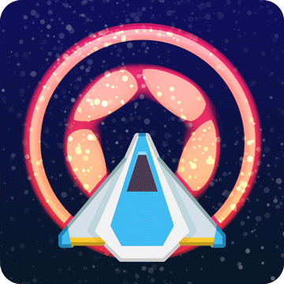
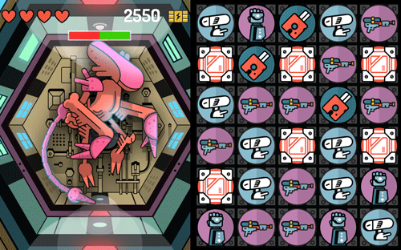

Chapter 8 — Deployment
⟨ Previous | Guide Index
Deployment is the culmination of all your hard work. Those hours of designing, programming, and testing have yielded a game that’s ready to show to the world! In this chapter we’ll discuss a few final considerations before publishing, as well as summarize the steps required for deployment.
Icons

Each of the app stores — the Apple App Store™, Google Play™, Amazon Appstore™, etc. — has different icon requirements and each requests various sizes and design considerations for different devices. There are several online services that will automatically create the entire set of required icons in the correct sizes, although you may wish to design them all yourself. Remember, these will be relatively small in size when they visually represent your app on an actual device, so fine details might be lost.
You can find a full list of required icons for each platform here. In addition, we’ve included a full set of icons for mobile devices in this chapter’s source files.
Making it Yours
This tutorial, and Star Explorer in general, is a starter project that many people complete and potentially submit to the app stores. As a result, many people have deployed the same identical game to prospective players. While this is acceptable, you should consider how to change and customize this game so that it’s yours, distinct in certain ways from the base template we’ve provided. Here are some ideas:
Change the art/audio to suit your personal taste.
Change the game title on the title screen and/or use a different background image.
Utilize additional asteroid image frames from the
gameObjects.pngimage sheet, randomly spawning one of the variations in thecreateAsteroid()function.Implement particle-based effects such as explosions and laser trails using Solar2D’s
built-in display.newEmitter() feature.
Once you have a game of your own (based on Star Explorer or some other code base), proceed to the next sections for details on testing and building.
Corona Live Builds

While the Solar2D Simulator is a great way to test your game during development, nothing quite compares to seeing it run on an actual device!
The best solution is Corona Live Builds. Using the power and speed of a local network, you can preview and test your game on multiple devices simultaneously, watching your game dynamically update as you edit its code and assets. With Corona Live Builds, you get
To learn how to configure live builds, see the Generating Live Builds guide.
Building and Publishing


Let’s discuss building and publishing! You should always test your app on an actual device before submitting it to an app store. In fact, since this is your final phase of quality control, you should test on as many devices as possible.
The requirements are a little different depending on which platform you intend to deploy to, so we’ll cover them separately.
iOS
The first step in building for Apple iOS is provisioning, Apple’s process for testing and distribution. You should follow the detailed instructions in the Provisioning and Building — iOS guide in order to test and deploy for iOS.
Android
Deploying and publishing to the Google Play marketplace is a little different than Apple. Android uses a few specific naming conventions and has its own process for “signing” apps with your personal information. You can step through the entire process here.
Kindle Fire
While Amazon’s Kindle Fire is built upon the Android operating system, it has a few unique considerations for building. Complete instructions for building for Kindle Fire are available here.
Windows / macOS
Yes, you can even build your game as a Windows desktop or macOS desktop application! However, mobile apps and desktop apps operate very differently — you must consider how the app will run in a window, how to handle keyboard responses, if the game window can be resized, etc. Don’t make the mistake of thinking that your game is ready for desktop deployment before studying the following guides:
Apple TV
Like desktop applications, there are several unique considerations which you must take into account before deploying your app to Apple TV. For detailed information, see the Apple TV / tvOS guide.
Android TV
Because Android apps are universal, it’s simple to deploy to Android TV — just build your app as a standard Android .apk, add two additional parameters to your build.settings file as outlined here, and include an Android TV banner as noted here.
Steam
To learn about deploying your desktop game to Steam, please see the Steamworks plugin documentation.
Congratulations!
You made it! Take a deep breath and be proud of how much you’ve learned in such a short time — you’ve built a complete game using Solar2D and you’re ready to begin your grand adventure into the world of game creation. What enhancements can you add to Star Explorer to make it even better? How about making the large asteroids explode into a few smaller asteroids when they’re hit? The game may also benefit from a few additional enemies to increase the challenge and variety.
What other ideas do you have? Do you want to make a puzzle game? A
Thinking of
Dream, Build, Ship!
Here are a few of the amazing apps built with Solar2D by creative dreamers just like you!
Where From Here?
Demo Projects
Star Explorer is just the beginning! Now that you’re comfortable using Solar2D and coding in Lua, check out some of our amazing Demo Projects which you can use as
| Match 3 Space RPG | Sticker Knight Platformer | Endless Sk8boarder | ||
|---|---|---|---|---|
|  |  |
 |
Solar2D Community
As we mentioned in the beginning, the Solar2D community is friendly and helpful. You can interact with other developers in various ways:
- Solar2D Forums — Get help from Solar2D developers and staff, or see how others tackled similar challenges.
- Discord —
Solar2D Developer Networkon Discord.
Learning Resources
There are several places where you can learn more about Solar2D:
- Solar2D Developer Guides go further in depth on many selected topics.
- The API Reference site provides details about every API.
Providing Feedback
Have feedback or ideas for new things you want to see in Solar2D? New directions you hope the product will go? Please share your thoughts at Solar2D forums or submit your requests at GitHub.
Apple and the Apple logo are trademarks of Apple Inc., registered in the U.S. and other countries. App Store is a service mark of Apple Inc. Mac and the Mac logo are trademarks of Apple Inc., registered in the U.S. and other countries.
Google Play, Android TV, and the Google Play logo are trademarks of Google Inc.
Amazon, Kindle, Echo, Alexa, Dash, Fire and all related logos are trademarks of Amazon.com, Inc. or its affiliates.
Microsoft, Encarta, MSN, and Windows are either registered trademarks or trademarks of Microsoft Corporation in the United States and/or other countries.
Steam and the Steam logo are trademarks and/or registered trademarks of Valve Corporation in the U.S. and/or other countries.